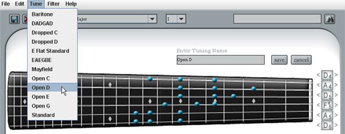

Links
About Guitar Scale Assistant
Getting Started
Using the Clickable Fretboard
Searching for Scales
Viewing Scales
Using the Tuners
Using the Audio Interface
Using the Tuners

Fig. 8 Using tuners
The fretboards are tunable through the left (tune down) and right (tune up) arrows on the tuners next to the fretboard. You can load preset tunings through the Tune menu. To create new tunings, use the clickable fretboard tuner to get the individual strings in the correct tunings. To save the new tuning, use the File -> Save Tuning menu option. A save tuning interface will appear, allowing you to enter a name for the new tuning and options to save the new tuning or cancel out.
< Prev | Next >